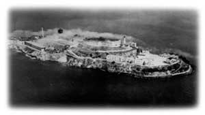
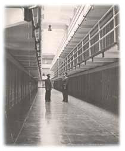

Printer Friendly Version Printer Friendly Version |
|

Before the Prison The name Alcatraz is derived from the Spanish "Alcatraces." In 1775, the Spanish explorer Juan Manuel de Ayala was the first to sail into what is now known as San Francisco Bay - his expedition mapped the bay and named one of the three islands Alcatraces. Over time, the name was Anglicized to Alcatraz. While the exact meaning is still debated, Alcatraz is usually defined as meaning "pelican" or "strange bird." In 1850, a presidential order set aside the island for possible use as a United States military reservation. The California Gold Rush, the resulting boom in the growth of San Francisco, and the need to protect San Francisco Bay led the U.S. Army to build a Citadel, or fortress, at the top of the island in the early 1850s. The Army also made plans to install more than 100 cannons on the island, making Alcatraz the most heavily fortified military site on the West Coast. Together with Fort Point and Lime Point, Alcatraz formed a "triangle of defense" designed to protect the entrance to the bay. The island was also the site of the first operational lighthouse on the West Coast of the United States. By the late 1850s, the first military prisoners were being housed on the island. While the defensive necessity of Alcatraz diminished over time (the island never fired its guns in battle), its role as a prison would continue for more than 100 years. In 1909, the Army tore down the Citadel, leaving its basement level to serve as the foundation for a new military prison. From 1909 through 1911, the military prisoners on Alcatraz built the new prison, which was designated the Pacific Branch, U.S. Disciplinary Barracks for the U.S. Army. It was this prison building that later became famous as "The Rock." The Rock The U.S. Army used the island for more than 80 years--from 1850 until 1933, when the island was transferred to the U.S. Department of Justice for use by the Federal Bureau of Prisons. The Federal Government had decided to open a maximum-security, minimum-privilege penitentiary to deal with the most incorrigible inmates in Federal prisons, and to show the law-abiding public that the Federal Government was serious about stopping the rampant crime of the 1920s and 1930s. USP Alcatraz was not the "America's Devil's Island" that many books and movies portray. The average population was only about 260-275 (the prison never once reached its capacity of 336 - at any given time, Alcatraz held less than 1 percent of the total Federal prison population). Many prisoners actually considered the living conditions (for instance, always one man to a cell) at Alcatraz to be better than other Federal prisons, and several inmates actually requested a transfer to Alcatraz. Birdman The island's most famous prisoner was probably Robert Stroud, the so-called "Birdman of Alcatraz." In reality, Stroud never had any birds at Alcatraz, nor was he the grandfatherly person portrayed by Burt Lancaster in the well-known movie. In 1909, Stroud was convicted of manslaughter; while serving his prison sentence at the U.S. Penitentiary (USP), McNeil Island, Washington, he viciously attacked another inmate. This resulted in his transfer to USP Leavenworth, Kansas. In 1916, he murdered a Leavenworth guard, was convicted of first-degree murder, and received a death sentence. His mother pleaded for his life, and in 1920, President Woodrow Wilson commuted the death sentence to life imprisonment. It was Stroud's violent behavior that earned him time in segregation. During his 30 years at Leavenworth, he developed his interest in birds and eventually wrote two books about canaries and their diseases. Initially, prison officials allowed Stroud's bird studies because it was seen as a constructive use of his time. However, contraband items were often found hidden in the bird cages, and prison officials discovered that equipment Stroud had requested for his "scientific" studies had actually been used to construct a still for "home-brew." Stroud was transferred to Alcatraz in 1942, where he spent the next 17 years (6 years in segregation in "D Block" and 11 years in the prison hospital). In 1959, he was transferred to the Medical Center for Federal prisoners in Springfield, Missouri, where he died on November 21, 1963.  Prison LifeWhile several well-known criminals, such as Al Capone, George "Machine-Gun" Kelly, Alvin Karpis (the first "Public Enemy #1"), and Arthur "Doc" Barker, did time on Alcatraz, most of the 1,576 prisoners incarcerated there were not well-known gangsters, but prisoners who refused to conform to the rules and regulations at other Federal institutions, who were considered violent and dangerous, or who were considered escape risks. Alcatraz served as the prison system's prison - if a man did not behave at another institution, he could be sent to Alcatraz, where the highly structured, monotonous daily routine was designed to teach an inmate to follow rules and regulations. At Alcatraz, a prisoner had four rights: food, clothing, shelter, and medical care. Everything else was a privilege that had to be earned. Some privileges a prisoner could earn included working, corresponding with and having visits from family members, access to the prison library, and recreational activities such as painting and music. Once prison officials felt a man no longer posed a threat and could follow the rules (usually after an average of five years on Alcatraz), he could then be transferred back to another Federal prison to finish his sentence and be released. Escape Attempts There were, however, prisoners who decided not to wait for a transfer to another prison. Over the 29 years (1934-1963) that the Federal prison operated, 36 men (including two who tried to escape twice) were involved in 14 separate escape attempts. Of these, 23 were caught, 6 were shot and killed during their escape, and 2 drowned. Two of the men who were caught were later executed in the gas chamber at the California State Prison at San Quentin for their role in the death of a correctional officer during the famous May 2-4, 1946, "Battle of Alcatraz" escape attempt. Whether or not anyone succeeded in escaping from Alcatraz depends on the definition of "successful escape." Is it getting out of the cellhouse, reaching the water, making it to land, or reaching land and not getting caught? Officially, no one ever succeeded in escaping from Alcatraz, although to this day there are five prisoners listed as "missing and presumed drowned." Following are summaries of the 14 escape attempts:
One of the many myths about Alcatraz is that it was impossible to survive a swim from the island to the mainland because of sharks. In fact, there are no "man-eating" sharks in San Francisco Bay, only small bottom-feeding sharks. The main obstacles were the cold temperature (averaging 50-55 degrees Fahrenheit), the strong currents, and the distance to shore (at least 1-1/4 miles). Prior to the Federal institution opening in 1934, a teenage girl swam to the island to prove it was possible. Fitness guru Jack LaLanne once swam to the island pulling a rowboat, and several years ago, two 10-year-old children also made the swim. If a person is well-trained and -conditioned, it is possible to survive the cold waters and fast currents. However, for prisoners - who had no control over their diet, no weightlifting or physical training (other than situps and pushups), and no knowledge of high and low tides - the odds for success were slim. Alcatraz Closes On March 21, 1963, USP Alcatraz closed after 29 years of operation. It did not close because of the disappearance of Morris and the Anglins (the decision to close the prison was made long before the three disappeared), but because the institution was too expensive to continue operating. An estimated $3-5 million was needed just for restoration and maintenance work to keep the prison open. That figure did not include daily operating costs - Alcatraz was nearly three times more expensive to operate than any other Federal prison (in 1959 the daily per capita cost at Alcatraz was $10.10 compared with $3.00 at USP Atlanta). The major expense was caused by the physical isolation of the island - the exact reason islands have been used as prisons throughout history. This isolation meant that everything (food, supplies, water, fuel...) had to be brought to Alcatraz by boat. For example, the island had no source of fresh water, so nearly one million gallons of water had to be barged to the island each week. The Federal Government found that it was more cost-effective to build a new institution than to keep Alcatraz open. After the Prison After the prison closed, Alcatraz was basically abandoned. Many ideas were proposed for the island, including a monument to the United Nations, a West Coast version of the Statue of Liberty, and a shopping center/hotel complex. In 1969, the island again made news when a group of Native American Indians claimed Alcatraz as Indian land with the hope of creating a Native American cultural center and education complex on the island. The "Indians of All Tribes" used their act of civil disobedience to illustrate the troubles faced by Native Americans. Initially, public support for the Native Americans' cause was strong, and thousands of people (general public, schoolchildren, celebrities, hippies, Vietnam war protesters, Hells Angels...) came to the island over the next 18 months. Unfortunately, the small Native American leadership group could not control the situation and much damage occurred (graffiti, vandalism, and a fire that destroyed the lighthouse keeper's home, the Warden's home, and the Officers' Club). In June 1971, Federal Marshals removed the remaining Native Americans from the island. In 1972, Congress created the Golden Gate National Recreation Area, and Alcatraz Island was included as part of the new National Park Service unit. The island opened to the public in the fall of 1973 and has become one of the most popular Park Service sites - more than one million visitors from around the world visit the island each year. If you would like more information about Alcatraz, visit the National Park Service Web site. |
| .................................................................................................... |
| Home | | | About | | | Inmate Locator | | | Prison Facilities | | | Careers |
| Inmate Matters | | | Policy / Forms | | | Doing Business | | | News / Information |
|
Accessibility |
Browser Requirements |
Contact Us |
Disclaimer | DOJ Legal Policies | Privacy Policy | Search | Site Map |